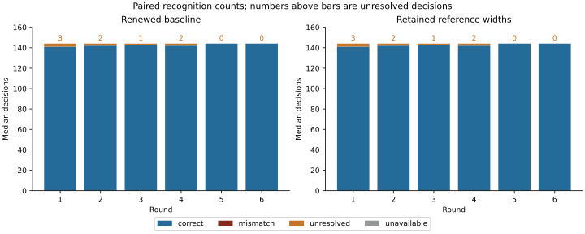
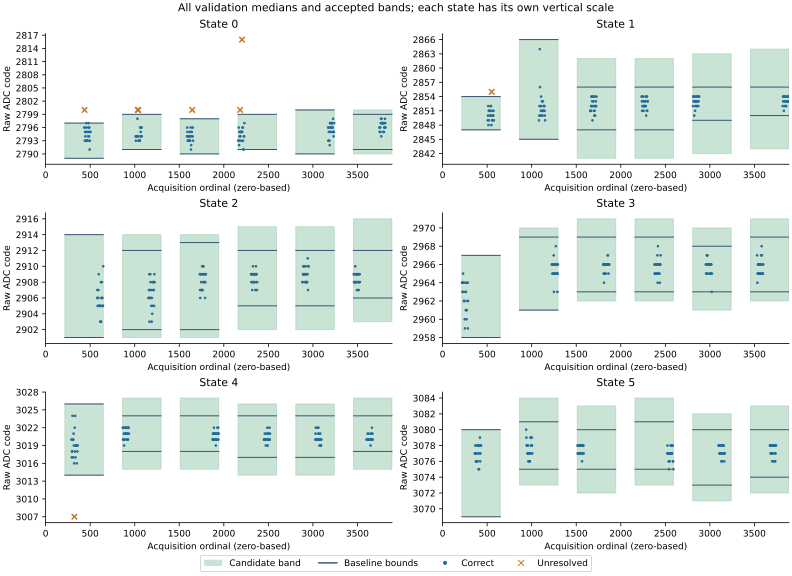

Question and rationale
Does retaining previously observed reference width improve six-state recognition when calibration centres are renewed?
The preceding three-boot comparison found a net benefit from calibration renewal on every boot. Across rounds 2–6, 93 median decisions changed from unresolved to correct and two changed from correct to unresolved. In both regressions, renewal excluded a value accepted by the initial band. These observations motivate a comparison that changes width retention while preserving the acquisition sequence and current reference centre.
The hypothesis is that a quiet reference interval can yield a band too narrow for subsequent observations. Retaining earlier reference spread may improve coverage. It may also preserve an excursion, increase wrong assignments, or cause neighbouring bands to overlap. All of these outcomes are part of the assessment. The protocol does not attribute the observed variation to temperature or a particular electrical mechanism.
Declared method
Three separate boots use the same frozen rule and unique image identities. Each boot retains six rounds of 648 observations: six reference holds of 36 readings followed by six validation holds of 72 readings. Each state therefore supplies 12 reference medians and 24 validation medians per round, using non-overlapping groups of three. Total: 3,888 raw observations and 864 validation median decisions per boot. Numbers in this account are decimal unless prefixed.
Control codes remain 90, 93, 96, 99, 102 and 105; the guard remains two raw ADC counts; pre-ADC delay remains 1,000 microseconds. The clear/trigger/status/read sequence, deterministic rotated hold order, operating checks and restoration are unchanged from the renewal protocol. Both recognizers receive the same measured median. No additional electrical request, ADC operation, selective retry or discarded warm-up period is introduced.
| Rule | Centre | Left and right tolerance |
|---|---|---|
| Renewed baseline | Current reference midrange | Current reference extent plus guard |
| Width-retaining candidate | Same current reference midrange | Largest reference-derived extent plus guard seen on that side of that state's centre so far in this boot |
For each state and round, let m and M be the minimum and maximum of its 12 reference medians. The centre is c = floor((m + M) / 2). Current left and right tolerances are c − m + 2 and M − c + 2. The baseline interval is [m − 2, M + 2]. The candidate retains separate cumulative maxima L and R of those tolerances and uses [c − L, c + R]. No reference value is removed as an outlier. Width history starts anew at each boot.
The first round's intervals are identical under both rules and serve as an implementation control. Width retention begins to differ in rounds 2–6, giving 720 primary paired decisions per boot. Widths never shrink within a boot; centres can move in either direction. This fixed candidate introduces no fitted margin or threshold selected from the new validation readings.
All neighbouring intervals must be strictly separated. Overlap or lower-bound underflow rejects the complete candidate calibration for that round. Proposed bounds and cumulative widths remain recorded, and width history is retained even after rejection. There is no clipping, nearest-state assignment or fallback to a previous accepted calibration. A measured value outside every accepted interval remains unresolved; rejected calibration makes recognition unavailable.
Calibration uses reference observations only. The recognizer receives the measured value and calibration, without the requested validation identity. Requested identities are used later to assess the recorded decisions.
Predefined assessment
Acquisition integrity: recover all 3,888 rows in the declared order, complete control and ADC diagnostics, six restorations, final restoration and pin release. Reconstruct every baseline and candidate calibration and decision from the retained readings. An incomplete acquisition cannot pass.
Primary comparison: for rounds 2–6, report the full paired transition table between renewed baseline and candidate. Descriptive improvement requires more correct decisions, fewer unresolved-plus-unavailable decisions and no increase in wrong assignments. Report each boot separately; require improvement in all three before calling it repeated. First-round outcomes remain reported separately and in whole-boot totals. Consecutive observations are not treated as independent replicates.
Complete recognition: require all six candidate calibrations to be accepted and all 864 candidate decisions to be correct in each boot. This criterion is separate from a net improvement. Report wrong, unresolved and unavailable outcomes separately, including every regression.
Coverage and cost: record reference extrema, centre, both cumulative widths, proposed bounds, calibration status and counter; each decision records median, recognized identity, status, calibration round and counters. Retain every raw reading and original diagnostics. Report band separation, calibration age, decision duration and the paired baseline outcome for every exception. Native additional computation and journal duration are measured rather than assumed equal.
Earlier returns are development inputs for arithmetic and instruction checks, not prospective evidence for this candidate. There is no rule tuning between the three planned boots. Any necessary implementation correction requires a separately identified preparation and explicit treatment of the affected comparison.
Execution and recording
Width calibration and paired acquisition dispatch are literal AArch64 SEIGRASM instructions. The existing baseline implementation and electrical components remain unchanged. The new dispatch executes the baseline first, then records the candidate from the same reference or validation group.
The current EEPROM loader transfers control to the SEIGRASM image. Target acquisition, calibration, classification and sector recording execute from the project's literal opcodes without a foreign target compiler. PC image tools copy those opcode bytes and initialize data; the PC assessor reconstructs returned computations. These roles do not replace the outstanding boot-firmware dependency.
Configuration schema 8 preserves the baseline records and adds six 48-word candidate calibration records and 864 eight-word candidate decisions. A completed acquisition records 49,056 words in section 3; an acquisition ending before the first reference phase completes retains the 384-word initial calibration extent. Maximum journal occupancy is 29,818 sectors within the existing 32,704-sector reservation. Unattempted candidate slots remain zero and are distinguished from scheduled unavailable decisions.
Instruction validation checks width retention, moving centres, rejected overlap, input bounds, reference/validation separation, wrong recognition, failed acquisition and the placed boot's recording path. Supplied-device execution checks implementation behaviour; it does not establish physical recognition.
Replay of preceding observations
Applying the declared candidate to the three preceding sets of archived readings gives 861, 856 and 856 correct median decisions out of 864, compared with baseline totals of 860, 856 and 855. All 18 reconstructed candidate calibrations are accepted. There are two additional correct decisions, no additional wrong assignments and 19 remaining unresolved decisions across the three sets. The literal calibration instructions reproduce the independently calculated bands for every archived reference round.
This replay uses existing development inputs; the candidate was not executed during those physical acquisitions. It does not satisfy the prospective criterion, and one set shows no net improvement. The frozen rule is retained for the new comparison. The replay indicates that retained reference width may address only a small part of the remaining exceptions.
Preparation and procedure
Boot 1 preparation A1BA497B5D9C returned on 25 September 2026. Before installation, all 230 supplied-input checks passed with unchanged source hashes, and the 64 MiB image passed complete write/readback verification. The returned comparison shows no recognition benefit from retaining reference width. The comparison ended after one of its three planned boots; no further boots are scheduled for this rule. The original protocol and returned evidence are preserved.
Preparation manifest; instruction validation; SD write/readback; retrospective replay; artifact hashes.
- Keep the Pi powered off for at least five minutes.
- Insert the prepared SD while power is off.
- Power on once and leave it uninterrupted for 30 minutes.
- Power off before removing the SD, then return the card to the PC.
Record departures from this procedure if any occur. Each subsequent boot receives a separately identified preparation after the preceding return is preserved.
Boot 1 results
All 3,888 observations were recovered in the declared sequence. The acquisition integrity criterion was met: six round restorations, final restoration and pin release reported success, and every recorded calibration and decision was independently reconstructed. All twelve baseline calibrations and all six candidate calibrations were accepted.
| Scope | Rule | Correct | Wrong | Unresolved | Unavailable |
|---|---|---|---|---|---|
| All rounds / 864 decisions | Renewed baseline | 856 | 0 | 8 | 0 |
| All rounds / 864 decisions | Retained widths | 856 | 0 | 8 | 0 |
| Rounds 2–6 / 720 decisions | Renewed baseline | 715 | 0 | 5 | 0 |
| Rounds 2–6 / 720 decisions | Retained widths | 715 | 0 | 5 | 0 |
Every paired outcome was identical: the primary comparison contains 715 correct-to-correct and five unresolved-to-unresolved decisions, with no other transitions. Round 1, where the intervals must be identical, returned 141 correct and three unresolved decisions under each rule. Neither descriptive improvement nor complete recognition met its predefined criterion.

The unchanged baseline records also retain the raw-reading comparison: initial calibration recognized 2,570/2,592 raw readings, and renewal recognized 2,569/2,592. For median recognition, the initially retained calibration recognized 846/864, compared with 856/864 after renewal. All remaining decisions in these four paths were unresolved; none were wrong or unavailable. The raw and median paths have different reference distributions and denominators.
Recorded counters span 136.188 seconds across acquisition and 1,310.139 seconds from trial start to the final section, including recording. Each candidate decision spans 101.406–101.720 milliseconds from the first reading's selection counter; calibration age at decision is 0.109–15.125 seconds. Candidate counters follow their corresponding baseline counters by 8.815–10.426 microseconds for decisions and 38.889–40.981 microseconds for calibration. These intervals include dispatch and recording operations between counters; they are not isolated instruction benchmarks. External power duration was not separately measured.
Band coverage and unresolved observations
Width retention expanded 25 of the 36 state-round intervals relative to the renewed baseline. Every proposed calibration remained separated; the smallest difference between one state's upper bound and the next state's lower bound was 35 raw ADC counts. However, all eight unresolved decisions occurred where the candidate and baseline bands were identical.

| Final ordinal | Round | State | Three readings | Median | Band under both rules |
|---|---|---|---|---|---|
| 323 | 1 | 4 | 3,007; 3,007; 3,021 | 3,007 | 3,014–3,026 |
| 437 | 1 | 0 | 2,800; 2,816; 2,791 | 2,800 | 2,789–2,797 |
| 551 | 1 | 1 | 2,864; 2,852; 2,855 | 2,855 | 2,847–2,854 |
| 1,034 | 2 | 0 | 2,783; 2,816; 2,800 | 2,800 | 2,791–2,799 |
| 1,040 | 2 | 0 | 2,800; 2,791; 2,800 | 2,800 | 2,791–2,799 |
| 1,646 | 3 | 0 | 2,800; 2,800; 2,800 | 2,800 | 2,790–2,798 |
| 2,183 | 4 | 0 | 2,789; 2,800; 2,800 | 2,800 | 2,791–2,799 |
| 2,204 | 4 | 0 | 2,816; 2,794; 2,816 | 2,816 | 2,791–2,799 |
Ordinals are zero-based positions in the raw acquisition; rounds are numbered 1–6. Five of these medians had all three constituent readings accepted by the independently calibrated renewed raw-reading recognizer. At ordinal 1,646, all three readings were 2,800: taking their median cannot remove this repeated displacement. At ordinal 2,204, two readings of 2,816 leave the median 17 counts above the band's upper bound.
State 0 accounts for six of the eight unresolved medians. Its reference-derived tolerance was four counts on either side of the current centre in rounds 1–4. Five-count tolerances first appeared in round 5, after its last unresolved decision; retention therefore first expanded this state's baseline interval in round 6. No classification changed there. The measured width history explains the absence of a benefit under this rule without identifying the physical cause of the excursions.
Counter-derived CPU frequency ranged from 1,499,971,004 to 1,500,029,438 Hz. The recorded thermal register ranged from 67,308 to 67,332 in its raw representation. These values do not establish a temperature cause for the unresolved readings.
Interpretation and continuation
This first prospective boot provides no evidence that retaining earlier reference width improves recognition. It shows that the rule can widen accepted bands without changing any validation outcome. The observed failures remain coverage gaps: each median lay outside its accepted interval, with no neighbouring-state assignment.
The bounded inference is that width history cannot protect against validation variation absent from the preceding reference intervals. Six failures concentrated in state 0 before its references produced a broader tolerance. This does not establish whether the difference arose in the rail, conversion, acquisition or reference sampling. Independent conversion freshness remains unresolved.
The comparison ended after one of three planned boots. Retaining earlier widths expanded 25 intervals without changing a decision; every unresolved value occurred where the two rules retained identical bands. The next investigation therefore tests separation-based tolerance, changing the source of the acceptance margin. The original three-boot protocol remains available in the preparation archive. Its repeated-improvement requirement was not met, and repeatability of this single returned outcome was not assessed. No claim that width retention can never help follows from this stopping decision.
Acquisition and provenance
Two complete 64 MiB reads matched. The return contains 29,818 journal sectors and 2,886 unused reservations. Windows reported the volume Healthy / OK. The MBR, partition geometry and both boot files are unchanged; the FAT copies agree and dirty indicators are unset. Seven sectors differ outside the journal, retained in the volume assessment. Target-side final journal readback is not proven; the matching PC reads establish the recovered bytes.
Raw capture; read-only acquisition; decoded records; paired assessment; all median groups and bands; boot-volume comparison; run conditions; capture, assessment and source hashes.
The physical-return checks reconstruct both rules from the raw image, retain all exceptions and reject altered calibration, decision and counter records. Capture SHA-256: f6af57414bdc2d70494ab9dff2f11f99d0f23a0d1b479a47a1de8432886edf62.
Interpretation limits
Control requests label the references; they are not independent voltage standards. Raw ADC counts are not converted to absolute voltage here. Status transitions, paired result reads and repeated recognition do not independently prove analogue conversion freshness. This experiment evaluates calibration coverage under the existing acquisition path. It does not qualify a Hyphos-made Seigsit, replace boot firmware or establish native multi-level CPU arithmetic.
The candidate cannot remove the tradeoff between coverage and separation. A retained broad reference interval may reject later rounds, and an unseen validation excursion may still lie outside the band. These are possible falsifying outcomes, not reasons to alter the declared rule after acquisition.